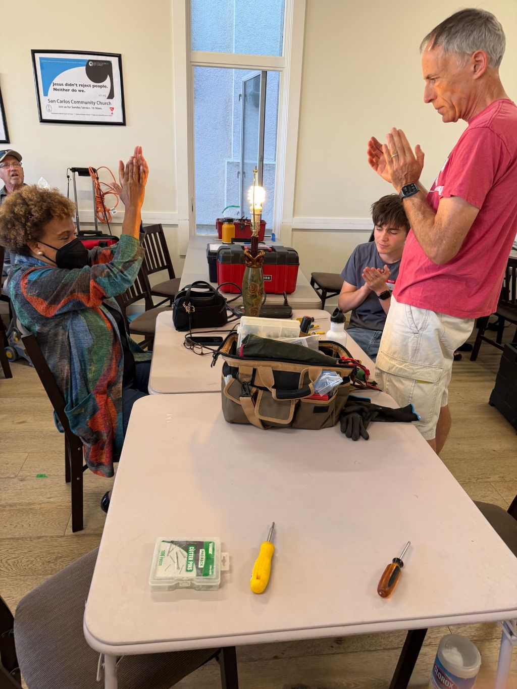

Looking back
Past events
Every Repair Café is a room full of neighbors, tools and things getting a second life. Here’s what we’ve fixed together so far.
- 79Items brought in
- 56Fixed and back in use
- 71%Fix rate
- 363lbKept out of the landfill
-

October 24, 2026 · San Carlos
Our second Repair Café
Back at Callis & Elaine Community Center for round two. Neighbors brought in 41 items, 20 volunteers helped fix 31 of them, and we kept more than twice as much out of the landfill as at our first event.
- 41Items
- 31Fixed
- 250 lbDiverted
-

September 26, 2026 · San Carlos
Our first Repair Café
Our inaugural event at Callis & Elaine Community Center in San Carlos. Neighbors brought in lamps, clothing, toys and more, and worked alongside volunteer repair coaches to fix them.
- 38Items
- 25Fixed
- 112 lbDiverted

Up next
Join us on November 21
Next Repair Café
Saturday, November 21 · 3–6 PM
Callis & Elaine Community Center, 1336A Arroyo Ave, San Carlos
Free and drop-in. Check-in closes at 5:30 PM.